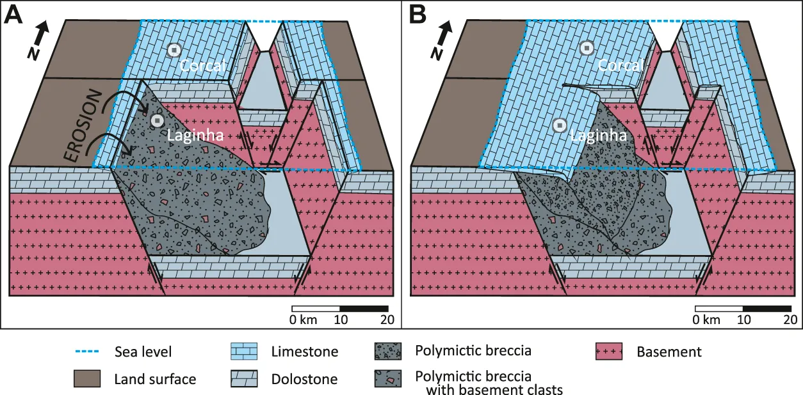

New Facies Model and Carbon Isotope Stratigraphy for and Ediacaran Carbonate Plataform From South America (Tamengo Formation - Corumbá Group, SW Brazil)

Resumo em Português
O Ediacarano é um período caracterizado pela diversificação dos primeiros animais e por extensos depósitos carbonáticos de plataforma rasa. Esses depósitos ainda não são bem compreendidos em termos de fácies e composição isotópica de carbono (δ¹³C). Este estudo enfoca a Formação Tamengo, no sudoeste do Brasil, que constitui um dos registros sedimentares mais contínuos e bem preservados do Ediacarano tardio na América do Sul. São apresentados novos dados detalhados de litofácies e isótopos estáveis de duas seções representativas (Corcal e Laginha), revisando a interpretação paleoambiental e estratigráfica da Formação Tamengo.A seção Corcal consiste em depósitos de plataforma rasa, incluindo camadas de calcário de águas rasas alternadas com camadas de folhelho e margas subordinadas, que contêm espécimes dos fósseis ediacaranos Cloudina lucianoi e Corumbella werneri. A seção Laginha, por outro lado, apresenta fácies mais heterogêneas — carbonatos impuros, brechas, margas e camadas subordinadas de argilito — sem evidências de Corumbella werneri. O registro isotópico de carbono estável também é distinto entre as duas seções, apesar de pertencerem à mesma unidade. A seção Corcal exibe valores de δ¹³C mais elevados e homogêneos, consistentes com os de sucessões ediacaranas em todo o mundo, enquanto a seção Laginha apresenta valores de δ¹³C mais variáveis, sugerindo influência de processos locais e pós-deposicionais.A diferença entre as duas seções é atribuída a variações topográficas da plataforma continental, que no local de Laginha era mais inclinada e controlada por falhas extensionais. A seção Corcal é proposta como melhor referência para a Formação Tamengo, enquanto Laginha é mais particular e influenciada por fatores locais. As associações de litofácies da Formação Tamengo são similares às das formações Doushantuo e Dengying, no sul da China, sem construções carbonáticas biogênicas significativas, e distintas de outras importantes unidades ediacaranas como o Grupo Nama (Namíbia) e a Formação Buah (Omã). A seção Corcal é caracterizada como possível referência para o Ediacarano na América do Sul.